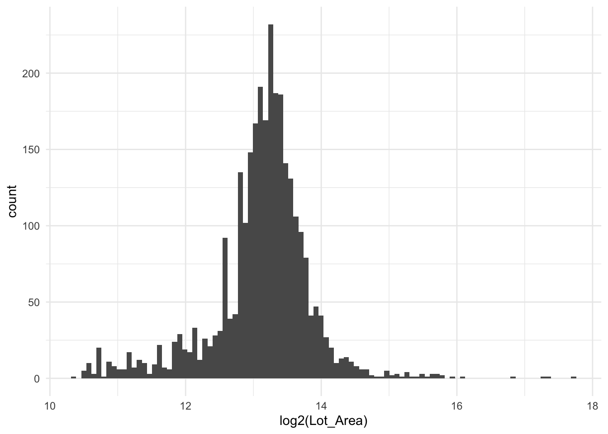
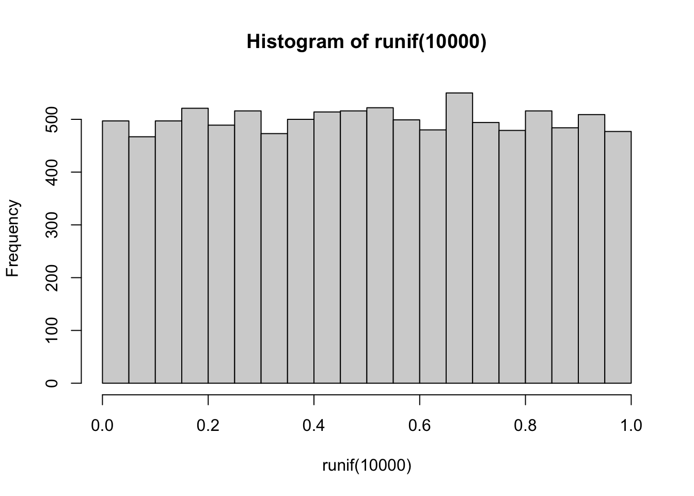
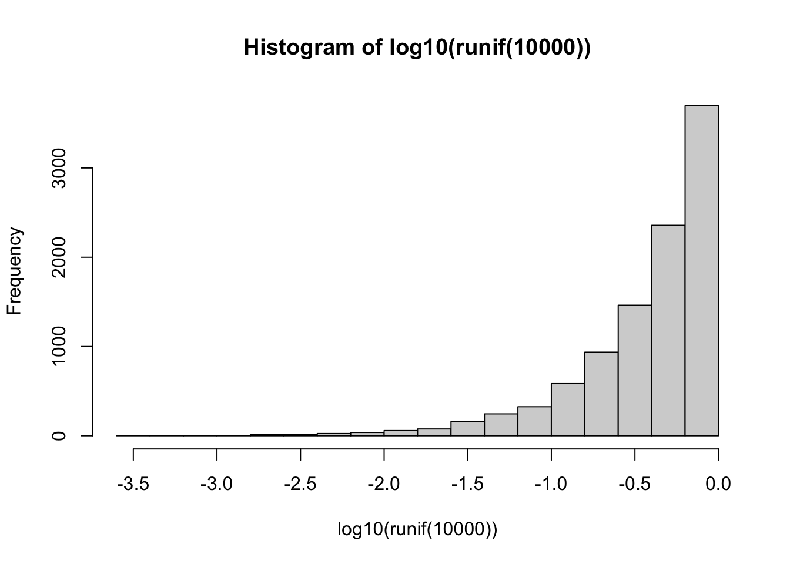

4 Logarithms
Logarithms come as a tool to deal with highly skewed data. Consider the histogram below, it depicts the lot area for all the houses in the ames data set. It is highly skewed with the majority of areas being less than 10,000 with a handful greater than 50,000 with one over 200,000.
This data could cause some problems if we tried to use this variable in its unfinished state. We need to think about how numeric variables are being used in these models. Take a linear regression as an example. It fits under the assumption that there is a linear relationship between the response and the predictors. In other words, the model assumes that a 1000 increase in lot area is going to increase the sale price of the house by the same amount if it occurred to a 5000 lot area house or a 50000 lot area house. This might be a valid scenario for this housing market.Another possibility is that we are seeing diminishing returns, and each increase in lot area is going to cause a smaller increase in predicted sale price.
The main identity that is interesting when using logarithms for preprocessing is the multiplicative identity
\[ \log_{base}(xy) = \log_{base}(x) + \log_{base}(y) \]
This identity allows us to consider the distances in a specific non-linear way. On the linear scale, we have that the distance between 1 and 2 is the same as 20 to 21 and 10,000 to 10,001. Such a relation is not always what we observe. Consider the relationship between excitement (response) and the number of audience members (predictor) at a concert. Adding a singular audience member is not going to have the same effect for all audience sizes. If we consider \(y = 1.5\) then we can look at what happens each time the audience size is increased by 50%. For an initial audience size of 100, the following happens
\[ \log_{10}(150) = \log_{10}(100 \cdot 1.5) = \log_{10}(100) + \log_{10}(1.5) \approx 2 + 0.176 \]
and for an initial audience size of 10,000, we get
\[ \log_{10}(15,000) = \log_{10}(10,000 \cdot 1.5) = \log_{10}(10,000) + \log_{10}(1.5) \approx 4 + 0.176 \]
And we see that by using a logarithmic transformation we can translate a multiplicative increase into an additive increase.
The logarithmic transformation is perfect for such a scenario. If we take a log2() transformation on our data, then we get a new interpretation of our model. Now each doubling (because we used log2) of the lot area is going to result in the same predicted increase in sale price. We have essentially turned out predictors to work on doublings rather than additions. Below is the same chart as before, but on a logarithmic scale using base 2.
it is important to note that we are not trying to make the variable normally distributed. What we are trying to accomplish is to remove the skewed nature of the variable.
The full equation we use is
\[ y = log_{base}(x + offset) \]
Where \(x\) is the input, \(y\) is the result. The base in and of itself makes a difference, as the choice of base only matters in a multiplicative way. Common choices for bases are \(e\), 2, and 10. I find that using a base of 2 yields nice interpretive properties as an increase of 1 in \(x\) results in a doubling of \(y\).
One thing we haven’t touched on yet is that logarithms are only defined for positive input. The offset is introduced to deal with this problem. The offset will default to 0 in most software you will encounter. If you know that your variables contain values from -100 to 10000, you can set offset = 101 to make sure we never take the logarithm of a negative number. A common scenario is non-negative, which contains 0, setting offset = 0.5 helps in that case. The choice of offset you choose does matter a little bit. The offset should generally be smaller than the smallest non-negative value you have, otherwise, you will influence the proportions too much. Below we use an offset of 0.1, and the relationship we get out of this is that distance from 0 to 1, is roughly the same as multiplying by 10.
offset <- 0.1
log(c(0, 1, 10, 100, 1000) + offset, base = 2) |> round(3)[1] -3.322 0.138 3.336 6.645 9.966On the other hand, if we set the offset to 0.001, we get that the difference from 0 to 1 is the same as the distance from 1 to 1000, or as the same as multiplying by 1000.
offset <- 0.001
log(c(0, 1, 10, 100, 1000) + offset, base = 2) |> round(3)[1] -9.966 0.001 3.322 6.644 9.966The use of logarithms will have different effects on different types of models. Linear models will see a change in transformed variables since we can better model relationships between the response and dependent variable if the transformation leads to a more linear relationship. Tree-based models should in theory not be affected by the use of logarithms, however, some implementations use binning to reduce the number of splitting points for considerations. You will see a change if these bins are based on fixed-width intervals. This is expected to have minimal effect on the final model.
4.1 Pros and Cons
4.1.1 Pros
- A non-trained operation, can easily be applied to training and testing data set alike
4.1.2 Cons
- Needs offset to deal with negative data
- Is not a universal fix. While it can make skewed distributions less skewed. It has the opposite effect on a distribution that isn’t skewed. See the effect below on 10,000 uniformly distributed values


4.2 R Examples
We will be using the ames data set for these examples.
ames %>%
select(Lot_Area, Wood_Deck_SF, Sale_Price)# A tibble: 2,930 × 3
Lot_Area Wood_Deck_SF Sale_Price
<int> <int> <int>
1 31770 210 215000
2 11622 140 105000
3 14267 393 172000
4 11160 0 244000
5 13830 212 189900
6 9978 360 195500
7 4920 0 213500
8 5005 0 191500
9 5389 237 236500
10 7500 140 189000
# … with 2,920 more rows{recipes} provides a step to perform logarithms, which out of the box uses \(e\) as the base with an offset of 0.
log_rec <- recipe(Sale_Price ~ Lot_Area, data = ames) %>%
step_log(Lot_Area)
log_rec %>%
prep() %>%
bake(new_data = NULL)# A tibble: 2,930 × 2
Lot_Area Sale_Price
<dbl> <int>
1 10.4 215000
2 9.36 105000
3 9.57 172000
4 9.32 244000
5 9.53 189900
6 9.21 195500
7 8.50 213500
8 8.52 191500
9 8.59 236500
10 8.92 189000
# … with 2,920 more rowsThe base can be changed by setting the base argument.
log_rec <- recipe(Sale_Price ~ Lot_Area, data = ames) %>%
step_log(Lot_Area, base = 2)
log_rec %>%
prep() %>%
bake(new_data = NULL)# A tibble: 2,930 × 2
Lot_Area Sale_Price
<dbl> <int>
1 15.0 215000
2 13.5 105000
3 13.8 172000
4 13.4 244000
5 13.8 189900
6 13.3 195500
7 12.3 213500
8 12.3 191500
9 12.4 236500
10 12.9 189000
# … with 2,920 more rowsIf we have non-positive values, which we do in the Wood_Deck_SF variable because it has quite a lot of zeroes, we get -Inf which isn’t going to work.
log_rec <- recipe(Sale_Price ~ Wood_Deck_SF, data = ames) %>%
step_log(Wood_Deck_SF)
log_rec %>%
prep() %>%
bake(new_data = NULL)# A tibble: 2,930 × 2
Wood_Deck_SF Sale_Price
<dbl> <int>
1 5.35 215000
2 4.94 105000
3 5.97 172000
4 -Inf 244000
5 5.36 189900
6 5.89 195500
7 -Inf 213500
8 -Inf 191500
9 5.47 236500
10 4.94 189000
# … with 2,920 more rowsSetting the offset argument helps us to deal with that problem.
log_rec <- recipe(Sale_Price ~ Wood_Deck_SF, data = ames) %>%
step_log(Wood_Deck_SF, offset = 0.5)
log_rec %>%
prep() %>%
bake(new_data = NULL)# A tibble: 2,930 × 2
Wood_Deck_SF Sale_Price
<dbl> <int>
1 5.35 215000
2 4.95 105000
3 5.98 172000
4 -0.693 244000
5 5.36 189900
6 5.89 195500
7 -0.693 213500
8 -0.693 191500
9 5.47 236500
10 4.95 189000
# … with 2,920 more rows5 Python Examples
TODO